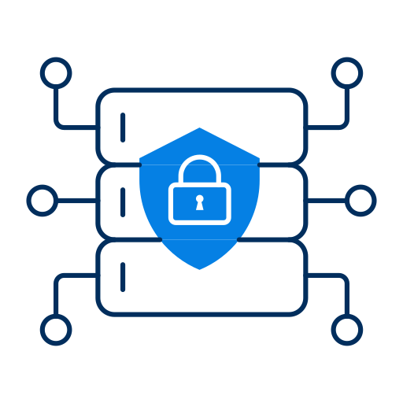

Importancía de la ciberseguridad
Casi todo lo que hacemos hoy deja un rastro digital. Protegerlo es cuidarnos a nosotros, a nuestras familias y a las instituciones que usamos todos los dias.

En la actualidad, practicamente cada una de las actividades que realizamos en nuestro dia a dia genera un rastro digital que queda registrado y almacenado en diversos dispositivos electronicos o servidores remotos. Desde el envio de un mensaje y la navegacion por internet, hasta las transacciones bancarias y el uso de aplicaciones cotidianas, nuestra informacion personal circula constantemente por la red.
¿Por que es tan importante?
Usamos Internet para estudiar, trabajar, comprar, pagar y comunicarnos. Cada una de esas acciones involucra datos personales: documentos, contrasenas, fotos, cuentas bancarias. Si alguien accede a ellos sin permiso, las consecuencias pueden ir desde una molestia hasta un dano economico o emocional serio.
La ciberseguridad es el conjunto de medidas que protegen esa informacion y los sistemas que la manejan. No es solo un tema de tecnicos: cualquier persona conectada es un posible blanco, por eso conviene saber como cuidarse.
El Foro Economico Mundial destaca que las amenazas ciberneticas estan entre los principales riesgos globales, poniendo en peligro la estabilidad economica y la seguridad de los paises. En este contexto, implementar estandares internacionales como la ISO 27001 es fundamental para establecer sistemas de gestion de seguridad de la informacion robustos y efectivos.
Un dato para recordar
Los atacantes suelen aprovechar el descuido de las personas mas que fallas tecnicas complejas. Un clic apurado puede abrir la puerta.
¿Por que es importante la ciberseguridad?
¿Donde es importante?
Hogares
Celulares, computadoras, camaras y redes Wi-Fi guardan fotos, chats y datos de pago de toda la familia.
Escuelas
Manejan datos de estudiantes y docentes, muchos de ellos menores de edad, ademas de plataformas de clase online.
Empresas
Protegen informacion de clientes, facturacion y secretos del negocio. Un ataque puede frenar la actividad por dias.
Bancos y finanzas
Custodian dinero y datos sensibles. Son un objetivo frecuente de fraudes y robo de identidad.
Hospitales
Guardan historias clinicas y dependen de equipos conectados. Una falla puede afectar la atencion de pacientes.
Organismos publicos
Tienen registros de ciudadanos y ofrecen tramites en linea. La confianza en el Estado depende en parte de cuidarlos.
Infraestructuras criticas
Son los servicios que sostienen la vida diaria: energia electrica, agua potable, transporte y telecomunicaciones. Como funcionan conectadas, un ciberataque puede afectar a miles de personas a la vez.
Nota: las imagenes de esta seccion fueron generadas con inteligencia artificial. (Gemini)
Ciberataques a instituciones en Argentina entre 2023 y 2026
La UBA sufrio un ciberataque de ransomware
A fines de 2023, cuando terminaba el ciclo lectivo y se acercaban las vacaciones de verano, la UBA sufrio un ataque que dejo sin funcionar parte de sus servidores. Los sistemas informaticos mas importantes quedaron paralizados, y docentes y alumnos no pudieron hacer tramites basicos como cargar o consultar calificaciones, inscribirse a materias y cursos de verano, o entrar a otras plataformas de consulta administrativa.
Frente a esto, el equipo de sistemas y seguridad informatica de la universidad puso en marcha enseguida un plan de contingencia. Gracias a ese trabajo de emergencia, los accesos mas urgentes para que la universidad pudiera funcionar se restablecieron antes de las fiestas, hacia el 23 y 24 de diciembre de 2023, y las plataformas mas usadas fueron volviendo a funcionar de a poco.
Sin embargo, las autoridades de la universidad avisaron en sus comunicados oficiales que recuperar el acceso no significaba que el problema estuviera resuelto. Por eso, los trabajos de seguridad siguieron durante las semanas siguientes: limpiar los sistemas afectados y dejar toda la infraestructura interna funcionando bien, lo que incluyo reconfigurar y reforzar los servidores Windows, instalar nuevos firewalls y poner en marcha portales administrativos renovados y mas seguros. Las tareas terminaron recien a comienzos de 2024.
Fuente:
Secuestro de sistemas en 250 municipios
Un virus de tipo ransomware ataco a los servidores centralizados de la empresa Program Consultores S.A. (PGM), proveedora de software de gestion para mas de 250 municipios en 11 provincias argentinas. Esto paralizo por completo las paginas web, la recaudacion de tasas municipales y los tramites de hacienda de localidades en Cordoba (como Villa Carlos Paz), Santa Fe y Santa Cruz (como Rio Gallegos).
Los atacantes exigieron un rescate inicial de 3 Bitcoins por municipio afectado, bajo la amenaza de duplicar la cifra cada 12 horas si no se concretaba el pago. La firma Program Consultores S.A. se nego rotundamente a pagar.
Las tareas de emergencia empezaron el mismo fin de semana del ataque. Volver a la normalidad por completo llevo entre 3 y 5 dias habiles, segun el municipio. Que tan rapido se recupero cada uno dependio de que tan actualizada estuviera su ultima copia de seguridad (backup).
Al no ceder a la extorsion ni obtener las claves de descifrado, la unica alternativa fue tecnica. Los equipos informaticos de la empresa y de cada municipalidad tuvieron que formatear o reemplazar los discos de los servidores afectados y reinstalar todo el sistema operativo desde cero.
Fuentes:
El ciberataque al PAMI
El ciberataque al PAMI en 2023 fue uno de los incidentes de ciberseguridad mas graves de la historia reciente de Argentina. Afecto directamente la salud y la privacidad de unos cinco millones de jubilados y pensionados.
El grupo Rhysida logro entrar a los sistemas informaticos del PAMI con un ransomware.
Se cree que el virus entro mediante tecnicas de engano como el phishing (probablemente robando las credenciales de algun prestador o medico). Una vez adentro, encripto los archivos de los servidores internos y el personal no pudo volver a usarlos.
Los atacantes dejaron un mensaje pidiendo un rescate de 25 Bitcoins (entre 500,000 y 735,000 dolares aproximadamente en ese momento) a cambio de no publicar la informacion. El Estado argentino, siguiendo su protocolo, no pago el rescate.
El ataque dejo a la obra social sin sistemas digitales durante semanas. Las recetas electronicas y las ordenes medicas digitales dejaron de funcionar, asi que el PAMI tuvo que autorizar de emergencia el uso de papel: los medicos debian hacer las recetas a mano y con firma fisica para que los pacientes pudieran retirar sus medicamentos en las farmacias. Los tramites de derivaciones, la entrega de panales, las autorizaciones de tratamientos de alta complejidad y la gestion de turnos tuvieron que hacerse a mano en las agencias, y eso genero demoras enormes.
Aunque al principio las autoridades dijeron que los datos estaban a salvo, el grupo Rhysida cumplio su amenaza a mediados de agosto de 2023 y publico en la Deep Web 831 GB de informacion robada (mas de 1.6 millones de archivos). La filtracion expuso datos muy sensibles.
Fuentes:
Todo comenzo en el año 1978
El primer hacker Argentino de la historia
En 1978, Raul Horacio Barragan descubrio la manera de volar gratis con un truco via telex; inició alli un raid de timos que incluyo viajes por el mundo, pero también huidas y choques con la ley.
Uso del Télex y códigos SITA: Trabajando en una oficina de Aerolíneas Argentinas en Concordia, aprendió detalladamente cómo operaba el sistema de mensajería electrónica. Descubrió las "claves de navegación" (llegó a dominar unas 120.000 combinaciones de códigos) que utilizaban las agencias para autorizar y confirmar pasajes.
Simulación de caídas y errores de satélite: Para enviar órdenes sin levantar sospechas directas de las oficinas centrales de Buenos Aires, Barragán utilizaba un código de error específico (secuencias como LLLL). Esto forzaba una interrupción temporal del sistema de transmisión y hacía que sus mensajes falsificados parecieran retransmisiones automáticas provocadas por un error satelital o técnico.
Aprobación de pasajes directos desde el exterior: Al saltarse los controles locales, enviaba las solicitudes de emisión de billetes directamente a la central de SITA en Suiza o a las aerolíneas internacionales involucradas. El sistema central interpretaba que la petición venía validada correctamente y emitía la orden de entrega de pasajes en las ventanillas de aeropuertos de cualquier parte del mundo.
Control total de la reserva: Con el tiempo, perfecciono tanto su conocimiento del código de SITA que no solo emitía el pasaje base: enviaba comandos falsos modificando los billetes a Primera Clase, solicitando menús especiales e incluso redireccionando el rastreo de equipajes.
Fuente: infobae.com
¿Que podemos perder si no nos protegemos?
Perdidas de dinero directas e indirectas: robo de dinero por el acceso no autorizado a cuentas bancarias y plataformas de pago, compras fraudulentas a nombre de las victimas, el alto costo de recuperar los sistemas informaticos y el posible pago de rescates que piden los atacantes.
Perdida de privacidad y dano a la identidad: fotos, mensajes privados y datos personales importantes pueden quedar expuestos en internet o ser usados por ciberdelincuentes para hacerse pasar por la victima, cometer fraudes a su nombre o chantajearla.
Daño a la reputacion, perdida de archivos y de tiempo: se puede danar la imagen personal o profesional frente a otras personas, perder para siempre documentos muy importantes y gastar muchas horas de trabajo en recuperar el control de las cuentas robadas.
Dudas comunes
La mayoria de los ciberataques no apuntan a una persona en particular, sino que se hacen con programas automaticos que buscan a cualquiera que se descuide con su seguridad. Ademas, hay un riesgo indirecto: una cuenta hackeada suele usarse, aprovechando la confianza que se tiene en esa persona, para enganar, estafar o poner en peligro a familiares, amigos y conocidos.
Tener un antivirus es importante, pero no alcanza por si solo. Hay que sumarle contrasenas seguras, actualizar el sistema cada tanto, activar la verificacion en dos pasos y, sobre todo, ser precavido y desconfiar de los mensajes o comunicaciones sospechosas.
La ciberseguridad es una tarea de todos y no solo de quienes administran los sistemas. Mientras los equipos tecnicos ponen barreras de proteccion en la red y el software, cada usuario es la ultima linea de defensa, y lo que importa es el cuidado con que maneja sus datos y entra a contenidos externos.